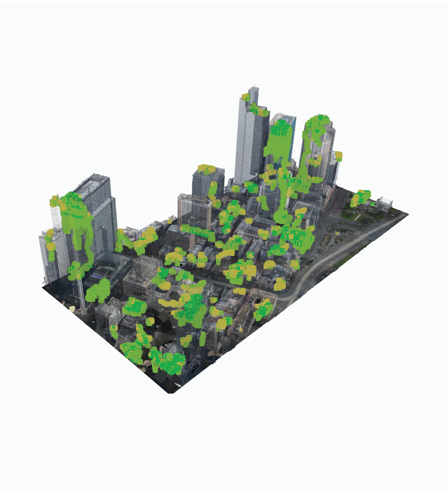

Appendix F: Resistance
The main text uses resistance to measures the difficulty of change at a location and requires effort to overcome. This appendix provides further details of the resistance workflow.
Resistance parameters
Table 1 shows the parameterisation values for the resistance grid that quantifies resistance to design actions.
** Table 1. Resistance parameterisation | Category** | Urban feature | Resistance value | |—-|—-|—-| | Roadways | Major arterial road | -100 | | | Other road carriageway | -80 | | | Laneway / little road | -50 | | Adaptable vehicle infrastructure | On-street parking | 100 | | | +3 m parking buffer | 50 | | | Road medians | 50 | | Pedestrian infrastructure | Footpaths | [?] | | | Tramways | [?] | | Existing depaving plans | Laneway regeneration plans | 80-100 | | Building envelopes | Heavy load rooftops | 30-75 | | | Light-load rooftops | 20-60 | | | Façade | As per roof | | Adaptable urban infrastructure | Utility poles | [?] | | Existing green space | Public open space | 80 | | | Existing tree canopies | +30 | | | Unassigned areas | 60 |
Connectivity Resistance
This subsection provides further information about patches and “patch resistance” used throughout the pathway modelling. We model patches to assess where bioavailable portions of the habitat volume could expand from existing habitat features to improve connectivity. To do so, we create a spatially explicit model of grassland patch growth that uses the resistance field to incorporate landscape heterogeneity. The extends cellular automata mechanics to simulate habitat dynamics, a type of modelling commonly used to model dynamic plant communities in changing ecosystems, to the habitat volume1 Figure 11.

** Figure 1. Output of a simulation run modelling biofacades at the City site. These biofacades link green and brown rooftops to the ground**For each site, the connectivity simulation:
Identifies starting nodes based on trees, logs, and poles
Precomputes neighbour relationships between voxels
Runs the expansion algorithm from each node
Assigns voxel attributes based on the result
Table 2 shows how the expansion algorithm operates from each node.
Table 2 . Steps for generating patches | Step | Action | Details | | — | — | — | | 1 | Set starting energy by node type and size | Large trees: 2500 energy units; Medium trees: 2000 energy units; Small trees: 1000 energy unit; Large logs: 750 energy units; Medium logs: 500 energy units; Small logs: 250 energy units; Utility poles: 125 energy units | | 2 | Set start nodes | Set starting nodes where patches grow to neighbouring voxels | | 3 | Assign energy cost | Urban elements create resistance that costs energy:; Low resistance areas (<50): No energy loss, fast expansion; Medium resistance areas (50-80): Moderate energy loss, occasional termination; High resistance areas (>80): Significant energy loss, high termination probability | | 4 | Grow patches | Each expansion step increments the turn counter; Voxels expanding have a chance to terminate (stopping their growth) and split (growing into two regions).; Voxels growing on façades have a weighting to grow downwards to link starting nodes on roofs with the ground.; Maximum turns set to 5000 (representing long-term potential); The turn value for each voxel indicates how quickly it can be rewilded | | 5 | Assign voxel attributes | Based on the results, assign the following attributes to voxels:; sim_Nodes: Groups voxels into patches; Sim_Turns: Record how many turns it took to reach the voxel |
References
Footnotes
Guillaume Decocq, Philippe Regnault, Jonathan Lenoir, Frédéric Paccaut, Laurent Menza, Gauthier Delvoye, Elise Janvresse, Déborah Closset-Kopp, and Olivier Goubet. (2023). Modelling plant community dynamics in changing forest ecosystems: a review. Botany Letters 170(4), 541-564. https://doi.org/10.1080/23818107.2023.2231045↩︎